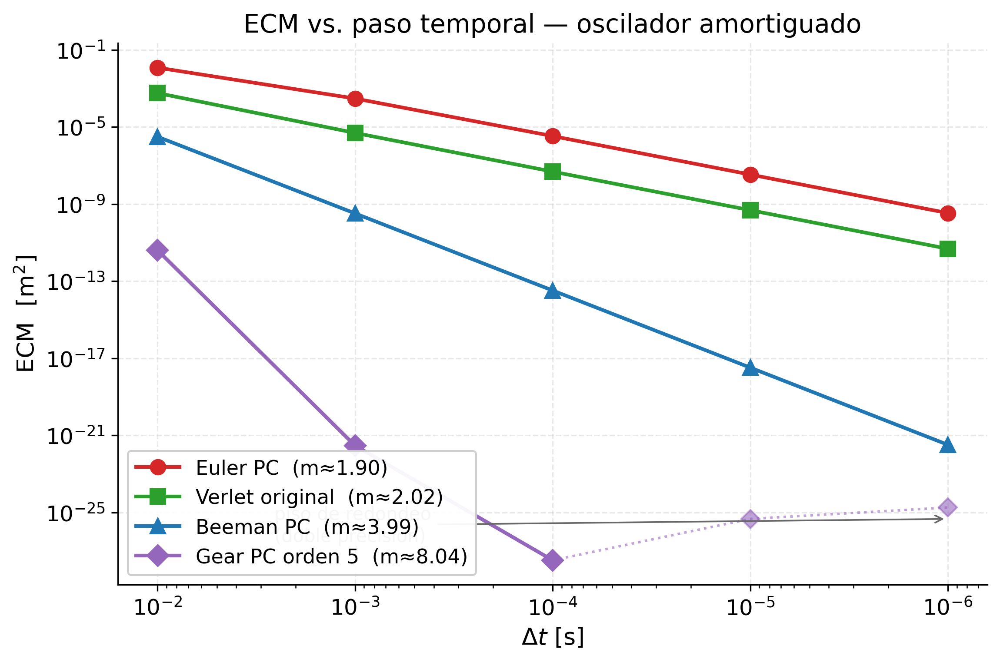
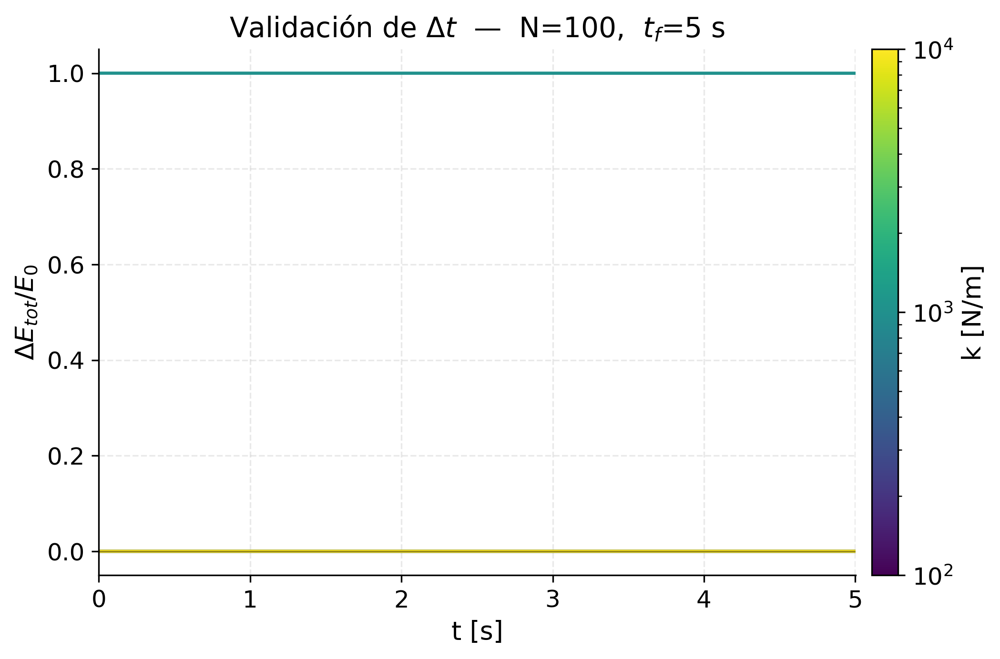
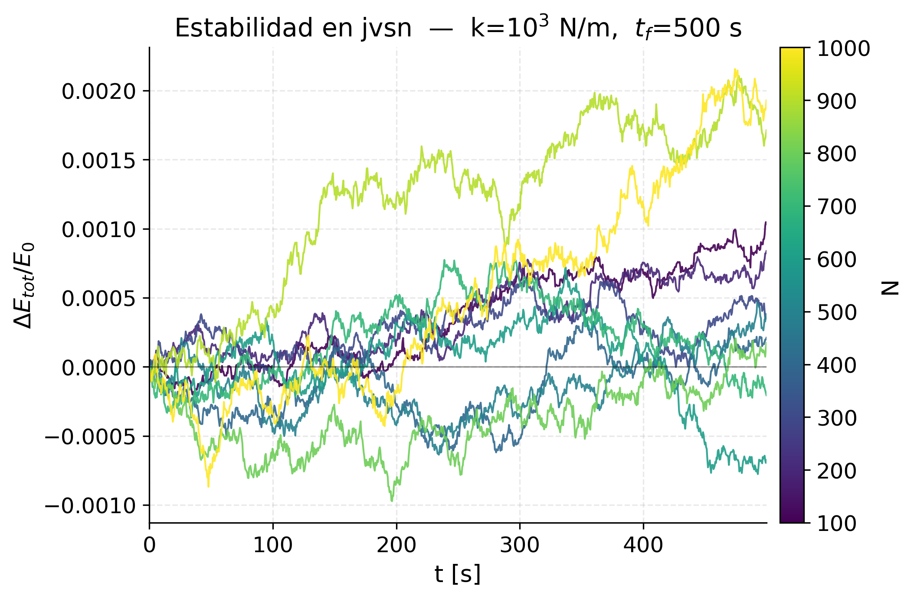
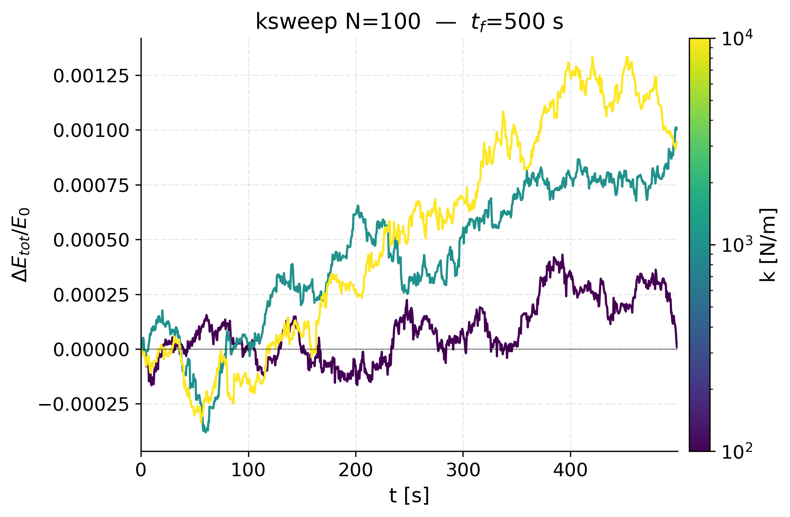
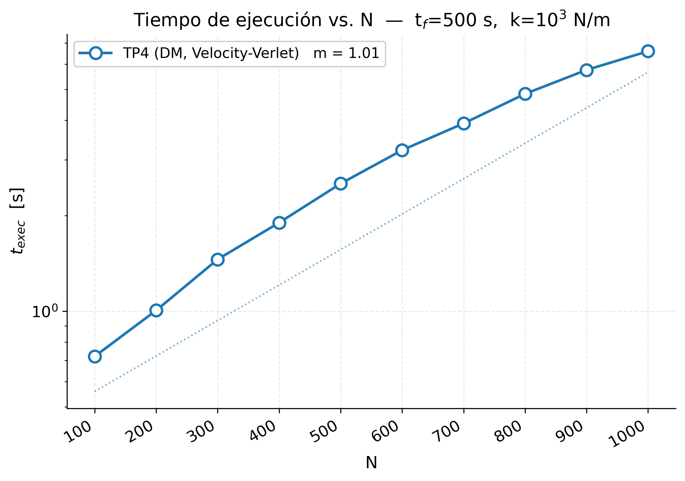
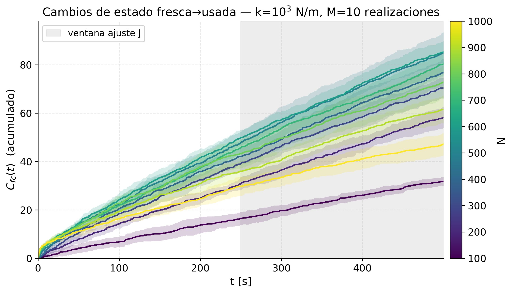
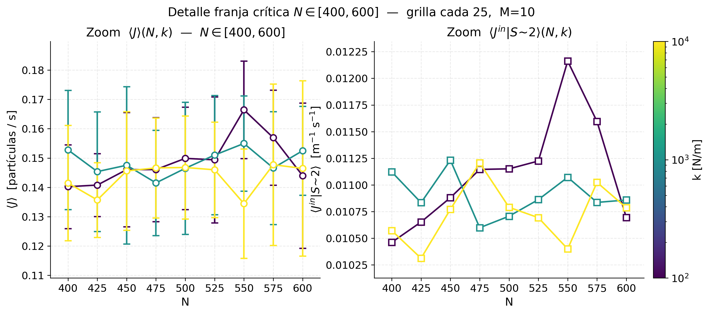
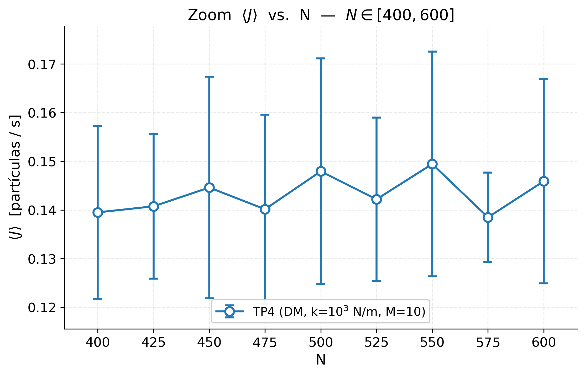

i
Trayectoria r(t) — numérico vs analítico
figures/01_s1_r_vs_t.png

Dinámica Molecular regida por el paso temporal · Grupo 05 · Caules, Esquivel, Cortese










Dos figuras que valen como la entrega del Sistema 1: la trayectoria cualitativa y el log-log del ECM. La primera es validación visual, la segunda es el resultado cuantitativo (orden de convergencia).
figures/01_s1_r_vs_t.png
Objetivo: mostrar que los cuatro integradores reproducen la dinámica analítica con un Δt razonable. Sanity check antes del análisis cuantitativo.
Comparación con la solución analítica del oscilador subamortiguado (m=70 kg, k=10⁴ N/m, γ=100 kg/s) usando Δt = 10⁻³ s. Permite distinguir visualmente cuáles integradores siguen la envolvente A·exp(−γt/2m) y cuáles acumulan error en fase o amplitud.
figures/02_s1_ecm_vs_dt.png
Objetivo: medir el orden de convergencia de cada integrador como pendiente en log-log. Resultado central del Sistema 1.
Barrido Δt ∈ {10⁻², 10⁻³, 10⁻⁴, 10⁻⁵, 10⁻⁶} s. Pendientes empíricas:
f(r,v).La consigna exige graficar el ECM, no el RMSE.
Tres figuras que justifican el Δt antes de mostrar cualquier resultado de scanning rate. Si la energía no se conserva, ningún J(N) es defendible. Regla operativa: Δt ≤ τ_col/50 con τ_col = 2π√(m/k).
figures/03a_s2_energy_validation.png
Objetivo: justificar el Δt elegido para cada k en el régimen corto.
Energía total E(t) = E_cin + E_pot para k ∈ {10², 10³, 10⁴} N/m. Si oscilara o derivara, sería señal de Δt demasiado grande.
figures/03b_s2_energy_jvsn.png
Objetivo: endurance test — verificar que la conservación no se rompe en t_f = 500 s (~10⁵ pasos).
Para todos los N del barrido con k = 10³ N/m. Una deriva pequeña pero acumulativa sólo aparece a esta escala.
figures/03c_s2_energy_ksweep.png
Objetivo: confirmar que la regla Δt = τ_col/50 es robusta para los tres k del ítem 1.4, incluso en corridas largas.
Habilita comparar ⟨J⟩(N,k) entre distintos k sin confundir el efecto físico con un artefacto numérico.
El núcleo de los ítems 1.1 y 1.2: escalado computacional, transiciones fresca→usada, y el scanning rate global ⟨J⟩(N).
figures/04_s2_timing.png
Objetivo: ley de escalado del costo computacional y comparación cuantitativa con TP3 (EDMD). Se mide en la pendiente del log-log.
Pendiente lineal en log-log ⇒ ley de potencia (no exponencial). DM con pendiente cercana a 1 (gracias al cell index method), EDMD con pendiente mayor por crecimiento superlineal del nº de eventos.
figures/05_s2_cfc_t.png
Objetivo: evidenciar el régimen estacionario que justifica medir J como pendiente.
A diferencia del TP3, los contactos duran varios Δt; sólo se cuenta el primer Δt del contacto (la transición). La pendiente del régimen estacionario es J(N).
figures/06_s2_j_vs_n.png
Objetivo: existencia de un N óptimo (no monotonía en N). Resultado central del ítem 1.2.
Pendiente de C_fc(t) en el régimen estacionario, M=10 realizaciones. Barras de error sobre realizaciones (std muestral). Zona crítica N ∈ [400, 600] — ver grupo "Zoom franja crítica".
Estructura espacial del flujo entrante de partículas frescas. Conecta el "scanning rate" agregado con la fenomenología local del anillo central.
figures/07_s2_radial.png
Objetivo: mostrar dónde se concentran las partículas frescas, con qué velocidad llegan, y cómo el producto ρ·|v| da el flujo radial.
Capas concéntricas de dS = 0.2 m, filtrando sólo partículas frescas con velocidad radial entrante (x·v < 0). Promedio temporal (t ≥ t_f/2) y sobre realizaciones. Gradiente de color asocia inequívocamente cada curva con su N.
figures/08_s2_radial_near.png
Objetivo: reproducir el pico no monótono del J(N) global desde el flujo local, mostrando cómo compiten ⟨ρ⟩ (crece con N) y |⟨v⟩| (cae con N por congestión). Corrige una falencia explícita del TP3.
Promedio de J^in, ⟨ρ⟩ y |⟨v⟩| en la franja anular S ∈ [1.5, 3.0] m. Tres observables combinados con doble eje y.
Ítem 1.4 — barrido en k ∈ {10², 10³, 10⁴} N/m × N ∈ [100, 1000], M=10 realizaciones, t_f = 500 s. Cada k usa su propio Δt validado.
figures/09_s2_k_sweep.png
Objetivo: cómo la rigidez del contacto afecta el scanning rate — si modifica la posición del N óptimo, el valor máximo, o sólo desplaza las curvas. Pregunta central del 1.4.
Panel izquierdo: scanning rate global ⟨J⟩(N, k) con barras de error. Panel derecho: ⟨J^in | S∼2⟩(N, k) en la capa cercana al obstáculo. Gradiente de color (escala log en k) + colorbar para asociar cada curva con su rigidez.
figures/10_s2_k_scalar.png
Objetivo: condensar todas las curvas del plot anterior en dos números por k. Si aparece una ley de potencia (recta en log-log) → max⟨J⟩ ∝ k^α, conclusión cerrada del 1.4.
max_N ⟨J⟩ — valor máximo del scanning rate global.N⋆ — el N que lo alcanza (argmax).Doble eje y, escala log en ambos ejes.
Detalle de la zona donde ⟨J⟩(N) alcanza su máximo, con grilla densa cada 25 partículas (M=10 realizaciones). Eje x lineal para que la separación visual sea uniforme.
figures/11_s2_k_sweep_zoom.png
Objetivo: resolver la posición y forma del máximo de ⟨J⟩(N) para cada k. Con grilla cada 25 se puede ubicar N⋆ con incerteza ~25 en vez de ~100.
figures/12_s2_j_vs_n_zoom.png
Objetivo: detalle del pico para k = 10³ N/m, para comparar la posición de N⋆ contra el J(N) del TP3 en la misma franja.
El engine está bien. Lo que se ve en los zooms no es caos del simulador — es ruido estadístico de M=10 realizaciones sobre una función que es localmente plana.
| N | J | σ | σ/J | Δ vecino |
|---|---|---|---|---|
| 400 | 0.1528 | 0.0203 | 13% | — |
| 425 | 0.1454 | 0.0204 | 14% | −4.8% |
| 450 | 0.1475 | 0.0268 | 18% | +1.4% |
| 475 | 0.1415 | 0.0180 | 13% | −4.0% |
| 500 | 0.1465 | 0.0225 | 15% | +3.6% |
| 525 | 0.1510 | 0.0204 | 13% | +3.1% |
| 550 | 0.1550 | 0.0163 | 10% | +2.6% |
| 575 | 0.1466 | 0.0192 | 13% | −5.4% |
| 600 | 0.1525 | 0.0151 | 10% | +4.0% |
La dispersión entre puntos vecinos (3–5%) es menor que el error estándar de la media: σ/√M = σ/√10 ≈ 4–6%. Los saltos punto a punto están dentro de la barra de error de la media — no son significativos.
⟨J⟩(N) no tiene un pico filoso, tiene una meseta ancha entre N≈450 y N≈600. Es físicamente esperable: alrededor del óptimo, agregar/quitar 25 partículas no cambia significativamente el scanning rate. Lo que sí cambia es la incidencia individual (que es ruidosa).
1. Una sola vez antes de spawnear cualquier sandbox (compila y materializa classpath para que Maven no pelee con sí mismo entre runs paralelos):
2. Lanzá cada sandbox en una terminal aparte. Cada uno genera su CSV en results/<SANDBOX_NAME>/, su PNG en figures/sandbox_<SANDBOX_NAME>.png (el plotter se ejecuta automáticamente al final del run) y su log en results/log/<SANDBOX_NAME>.log. Nada toca results/s2/ ni los plots principales.
3. Rollback total (cualquier momento): bash scripts/rollback_sandbox.sh
Réplica del sandbox actual con semilla distinta. Si esta corrida y la del run M30 original coinciden dentro de las barras de error, la estadística de M=30 es robusta. Si no coinciden, M=30 no alcanza y conviene escalar a M=50.
SEM cae a ~1.8% del valor medio, por debajo de las diferencias típicas entre puntos vecinos (3–5%). Es el corte donde la curva del zoom se vuelve interpretable: si hay un pico nítido, acá se ve.
Concentra el presupuesto computacional en el caso central (k = 10³ N/m). Con M=100, SEM ~1.3%. Sirve para responder definitivamente si hay pico nítido o meseta plana entre N=450 y N=600 para el k de referencia.
La consigna del ítem 1.4 propone k ∈ {10², 10³, 10⁴, 10⁵} N/m pero el barrido actual sólo tiene los primeros tres. Este sandbox agrega k = 10⁵ para tener el cuarto punto en el plot de max⟨J⟩(k) y N⋆(k) — pasar de 3 a 4 puntos hace una diferencia enorme para identificar (o descartar) una ley de potencia.
El dt resultante es τ/100 ≈ 2·10⁻⁴ s, así que cada realización es ~3× más cara que k=10⁴ (2.5M pasos vs 800K). Cabe en ~1 h con M=30 sólo para este k.
El j_vs_n.csv y radial_N*.csv del main run usan M=10. Este sandbox corre el experimento jvsn (no ksweep) con M=30 sólo en la franja, para tener barras de error más limpias en el plot 06 y perfiles radiales más suaves para los plots 07–08. Además del CSV agregado, genera radial_N*.csv en la sandbox que se pueden usar para regenerar los perfiles radiales con mejor estadística.
Nota: este sandbox usa la rama EXPERIMENT=jvsn del script (en lugar del default ksweep). El plotter de output es plot_s2_j_vs_n_sandbox.py.
Aumenta la resolución espacial de N=25 a N=20. Si el pico tiene una estructura más fina que 25 partículas (curva en forma de "doble joroba", por ejemplo), acá aparecería. Si la curva sigue siendo plana, confirma que el comportamiento es genuinamente una meseta.